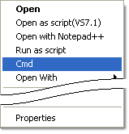

Throughout the documentation many of samples require execution of some commands from command-prompt. It would be more convenient if there was a way to open the command prompt window with a specific directory set as a current directory.
The following tutorial shows how to create and execute script that creates shell extension 'Cmd'. This extension allows to open command-prompt pointing to the directory where 'right-clocked' file is.
| using System; using Microsoft.Win32; class Script { static public void Main(string [] args) { if (args.Length == 1) { if (args[0].ToLower() == "/u") { try { Registry.ClassesRoot.DeleteSubKeyTree(@"*\shell\Cmd"); Console.WriteLine("Shell extension 'Cmd' has been removed."); } catch (Exception ex) { Console.WriteLine(ex); } } else if (args[0].ToLower() == "/i") { RegistryKey shell = Registry.ClassesRoot.CreateSubKey(@"*\shell\Cmd\command"); shell.SetValue("", "cmd.exe"); shell.Close(); Console.WriteLine("Shell extension 'Cmd' has been created."); } } } } |
Click here to obtain full listing of cmdShell.cs.
Now you can open command-prompt in a directory of your choice just by
right clicking any file in that directory and selecting item 'Cmd' from the context menu.

Usually context menu items for file/folder right-click event (so called Shell Extensions) are implemented as COM servers. However in some cases the same result can be achieved with much simpler implementation. In this case context menu is created by modifying the registry.
Code itself is straightforward. The script uses Registry class which belongs to Microsoft.Win32 namespace to create/delete the registry key.